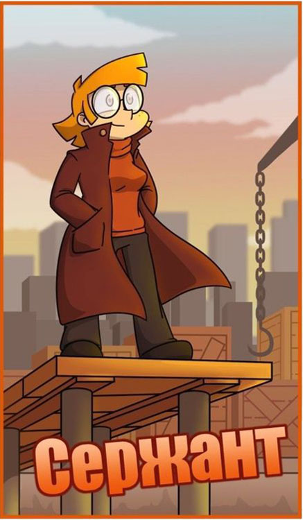

Основная колода

Черный лагерь(мафия)
Цель мафии — истребить всех мирных жителей или, по крайней мере, остаться с ними в равном количестве. Днем мафия выдает себя за честных горожан, а ночью мафиози осторожно просыпаются и вместе выбирают жертву, в которую «стреляют». Общаться представители мафии могут только жестами, чтобы их не услышали другие игроки. Номер выбранной жертвы представители мафии показывают ведущему и снова засыпают.
Глава мафии
Глава мафии, он же дон, выполняет два предназначения: во-первых, принимает окончательное решение, если мафия не может прийти к согласию в процессе выбора жертвы, а, во-вторых, просыпается отдельно от своих подопечных и пытается вычислить комиссара — предводителя мирных жителей. Каждую ночь дон указывает ведущему на того игрока, которого считает комиссаром, и получает либо отрицательный, либо положительный ответ. Если дон вычисляет комиссара, то старается убедить город выгнать этого игрока днем, либо стреляет в него следующей ночью вместе с мафией.
Красный лагерь (мирный город)


Мирные жители
Их большинство, но они не знают, кто есть кто. Ночью мирные горожане не просыпаются, они участвуют только в дневном обсуждении, стараясь вычислить мафию.
Комиссар
Уполномоченный представитель мирного города. Просыпается в свой черед и проверяет любого игрока на принадлежность к мафии. Комиссар не стреляет, он может только получить ответ от ведущего, является ли мафией тот или иной игрок. Если комиссар вычисляет мафию, днем ему необходимо, не выдав своей роли, убедить город выгнать этого игрока.
Доктор
Обладает способностью лечить жителей города. Каждой ночью доктор пытается угадать, в кого
стреляла
мафия, и указывает на этого игрока ведущему. Если доктор угадал и «вылечил» жертву мафии, город
просыпается без потерь (или с меньшими потерями).
Доктор не может исцелять одного и того же игрока две ночи подряд. Вылечить самого себя доктор
способен только один раз за игру.
Серый лагерь

Маньяк
Его цель — остаться один на один с мирным жителем. Маньяк просыпается ночью и выбирает жертву. Ею может оказаться любой персонаж: мирный житель, мафия или другой представитель серого лагеря. У маньяка есть две особенности: его жертву не может вылечить доктор, и, если маньяка проверяет комиссар, ведущий отвечает ему, что это мирный житель.
Дополнительная колода
Черный лагерь(мафия)
Куртизанка/Любовница
Ночью просыпается два раза: первый — в составе мафии, чтобы выбрать жертву; второй — отдельно, чтобы кого-то «заблокировать». Любовница наугад показывает на одного из игроков, и, если у того есть активная роль (например, доктор, маньяк, журналист), этой ночью он не сможет ее выполнять. Доктор не сможет лечить, маньяк — стрелять, журналист — устраивать проверки. Главная цель любовницы — попасть в комиссара, доктора или другого представителя красного лагеря, чтобы подорвать их активность против мафии. Также, как и доктор, любовница не может указывать на одного и того же игрока две ночи подряд.
Красный лагерь
- 
Шериф/сержант
Вооруженный представитель мирного города. Ночью шериф просыпается и наугад стреляет в одного из игроков. Цель шерифа — попасть в мафию, маньяка или другого противника красного лагеря. Если шериф попадает в мирного жителя, наутро тот покидает игру также, как жертва мафии или маньяка.
Адвокат
Просыпается ночью и обеспечивает «алиби» одному из игроков. Тот, на кого укажет адвокат, получает иммунитет на дневном голосовании. Например, если ночью адвокат указал на маньяка, а днем против этого игрока проголосовало большинство, ведущий объявляет, что казнь не состоится, поскольку у игрока есть иммунитет. Ведущий раскрывает эту информацию только после голосования. В результате персонаж остается в игре, а город уходит в ночь, не совершив дневной казни.
Журналист
Просыпается ночью и проверяет любых двух игроков на принадлежность к одному или к разным лагерям. Журналист показывает ведущему два номера, и тот жестами отвечает ему, в одной или в разных командах находятся выбранные игроки. При этом цвет команд не называется. Например, если журналист показал на доктора и дона мафии, то ведущий ответит, что они принадлежат к разным лагерям. Если на комиссара и мирного жителя — то к одному. Представители серого лагеря всегда будут находиться в разных командах с другими персонажами.

Серый лагерь
Оборотень
Сначала выступает на стороне мирного лагеря: вычисляет мафию и активен только днем. Но как только город покидает вся мафия, оборотень занимает ее место и начинает просыпаться по ночам, чтобы истреблять мирных жителей. Оборотень побеждает, если остается один на один с мирным.
Зеркало
Просыпается последним и указывает на любого игрока. Если этой ночью в зеркало стреляли (неважно, кто именно, и сколько выстрелов было сделано), то пуля «уходит» к выбранному зеркалом игроку. Если на зеркало не покушались, или его вылечил доктор, то для игрока, на которого оно укажет, зеркало не опасно. Также как и остальные активные роли, зеркало может быть заблокировано любовницей. В этом случае перенаправить отразить удар зеркало не сможет. Зеркало выигрывает, если остается один на один со стреляющей ролью.
Ведущий
Ведущий не только объясняет, как играть в Мафию, но и моделирует ход игры, следит за развитием
сюжета и за дисциплиной, которая является важной составляющей игрового процесса. Например, во время
персональных высказываний каждого игрока остальные участники не должны нарушать тишину или активно
жестикулировать.
Кроме того, именно ведущий закладывает фундамент того «города», жителями которого вы хотите
оказаться, и обеспечивает ваше плавное погружение в атмосферу игры.